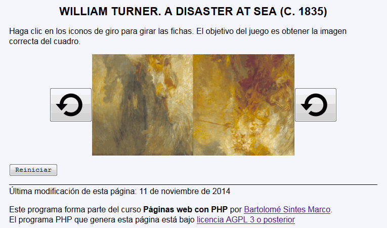
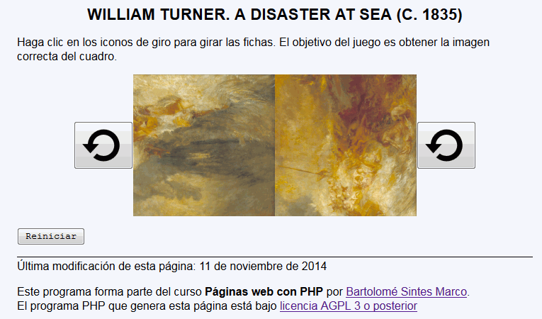
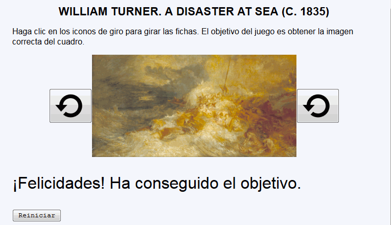

Turner - Ejemplo de programa
Nota: El día del examen los alumnos no tienen acceso a este ejemplo, solamente tienen acceso a las capturas del apartado anterior.
Un ejemplo de programa puede probarse en la ventana siguiente:
En este ejercicio se debe crear un programa que permtia jugar a un juego. El juego consiste en un cuadro partido en dos piezas y hay que girarlas hasta que el cuadro se vea correctamente



<h1>William Turner. A Disaster at Sea (c. 1835)</h1>
<p>Haga clic en los iconos de giro para girar las fichas. El objetivo del juego es obtener la imagen correcta del cuadro.</p>
<form action="/mclibre/consultar/examenes/php_examenes/14-15/turner/turner.php" method="get">
<table cellpadding="0" style="margin-left: auto; margin-right: auto">
<tbody>
<tr>
<td><button type="submit" name="mod" value="1">
<img src="img/rotate.svg" height="60" alt="cambiar" /></button></td>
<td><img src="img/turner-1_2.jpg" alt="Turner" /></td>
<td><img src="img/turner-2_4.jpg" alt="Turner" /></td>
<td><button type="submit" name="mod" value="2">
<img src="img/rotate.svg" height="60" alt="cambiar" /></button></td>
</tr>
</tbody>
</table>
<p><input type="submit" name="mod" value="Reiniciar" />
<input type="hidden" name="a" value="2" />
<input type="hidden" name="b" value="4" /></p>
</form>
Nota: El día del examen los alumnos no tienen acceso a este ejemplo, solamente tienen acceso a las capturas del apartado anterior.
Un ejemplo de programa puede probarse en la ventana siguiente: